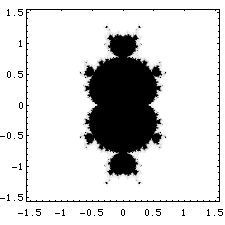
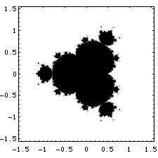
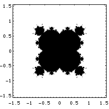
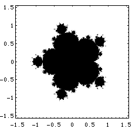
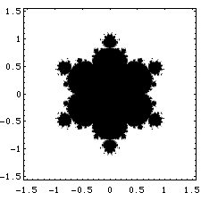
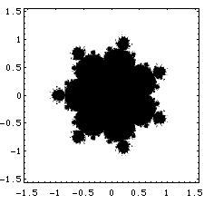
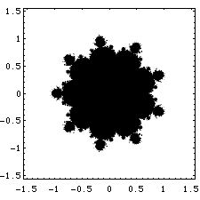
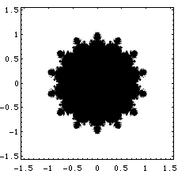
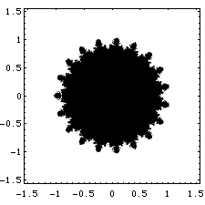

| For any integer n > 2 we can define the Mandelbrot set
for f(z) = zn + c. |
| This function has just one critical point, z = 0,
and so the algorithm to generate the Mandelbrot set is the same as that for
z2 + c. That is, |
| start with z0=0 and generate zn by
zn = f(zn-1). |
| If the zn run away to infinity, c does not belong to the Mandelbrot set;
if the zn do not run away to infinity, c does belong to the Mandelbrot set. |
| For functions with more than one critical point, the
problem is more subtle. |
| Here are some examples. |
|  |
 |
 |
| z3 + c |
z4 + c |
z5 + c |
|  |
 |
 |
| z6 + c |
z7 + c |
z8 + c |
|  |
 |
 |
| z10 + c |
z15 + c |
z20 + c |
|
| The pattern should be clear: the central component of
the Mandelbrot set for zn + c has n - 1 cusps. |
| In addition,
the general extent of the Mandelbrot set decorations appears to be getting smaller. |
| This is correct: as n → ∞, the Mandelbrot set for
zn + c approaches the unit disc. |